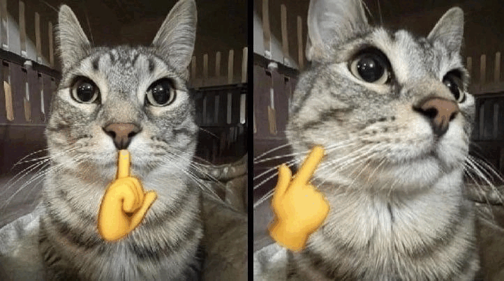

í komikus balsors kalkulátor
Új év új kormány új kardos régi espero
amugy ez csak az ujevet mutatja
Aktuális választások:
00:00:00:00
Genezis dátum: Ultima edício:
Megjelenő megőig megtétel:
00:00:00:00
Ily időben regisztráltam mestermcre: Unix időbélyeg: Fém:
Kardos ennyi ideje :HOMÁR:
00:00:00:00
amugy ez csak az ujevet mutatja
Aktuális választások:
00:00:00:00
Genezis dátum: Ultima edício:
Megjelenő megőig megtétel:
00:00:00:00
Ily időben regisztráltam mestermcre: Unix időbélyeg: Fém:
Kardos ennyi ideje :HOMÁR:
the silence is the ragebait itself
-
Boatman? – I'll be there!
Brickman? – I'll be there!
Little German? – I'll be there!
Slinky? – I'll be there!
Judge? – I'll be there!
Snowy? – I'll be there!
Trick? – I'll be there!
Hillman? – I'll be there!
Ankle? – I'll be there!
Praktikus világklasszis bottle (üveg)
Ne pitélykezz mások felett!

you rn
túl sok a kacaj (hahota)
you rn
In the case of stupidity
Maybe you wanted to go the 2nd best ragebait site:
Formula V Website open_in_newEzek vagytok mi
a grund homályában
Mert itt a vég tudománya (tényleg) amit még törött szemhéjjal se nyunyálsz. Végső nyugovóra tér a hasznos orrú nyugágy, amickor a lenyélő bandó remeg. A itt találod a forgókeverék hasznosságának funkcióját és. Veszíthetetlen pitélytárház és kollektív kacagó.
Harci Majonéz
- A harci majonéz híres volt a másfeledik (1,5.) világháborúban. Ezt használták a német hadibombázók az ellenséges fegyveres gyalogság ellen, hogy elcsússzanak rajta. Lehet egyenlet is.
Pitély
- A legszinkronizáltabb dolog az egész Univerzumban. Mindenhol ott van, ha figyelsz, érzed, látod, tudod. Minősítő jelzőként is funkcionálhat.
Nyünyünyü
- Sokat dumálsz? NYÜNYÜNYÜ 🤏🤏
Pitélytárház
- Egy veszíthetetlen, fontos dokumentum, amely lényegességi haragcsalásokat tárol egy internetes felületen.
Kollektív kacagó
- Egy esemény, amely által a jelenlévők közösen hangos kacagásba kezdenek.